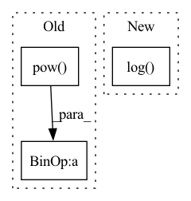

Pattern ID :23556

Before Change
def forward_rate_constants_func_matrix(self):
self.kf = self.Arrhenius_A * \
torch.pow(self.T, self.Arrhenius_b) * \
torch.exp(-self.Arrhenius_Ea / self.T)
def equilibrium_constants_func(self):
After Change
torch.pow(self.T, self.Arrhenius_b) * \
torch.exp(-self.Arrhenius_Ea / self.T)"""
self.kf = self.Arrhenius_A * \
torch.exp(self.Arrhenius_b * torch.log(self.T) \
- self.Arrhenius_Ea / self.T)
def equilibrium_constants_func(self):
In pattern: SUPERPATTERN
Frequency: 3
Non-data size: 3
Instances
Fragment ID: 73792614
Project Name: deng-mit/reactorch
Commit Name: 87bde1e6808eeb2d1bf5c3282adb40da061ba1cb
Time: 2020-06-29
Author: 41820879+WeilunQiu@users.noreply.github.com
File Name: reactorch/Solution.py
M Class Name: Solution
N Class Name: Solution
M Method Name: forward_rate_constants_func_matrix(1)
N Method Name: forward_rate_constants_func_matrix(1)
M Parent Class: nn.Module
N Parent Class: nn.Module
M File Name: reactorch/Solution.py
N File Name: reactorch/Solution.py
M Start Line: 331
M End Line: 333
N Start Line: 346
N End Line: 348
'>
Before Change
node_feat = th.nn.functional.normalize(node_feat, p=2.0, dim=-1)
degs = graph.out_degrees().float().clamp(min=1)
norm = th.pow(degs, -0.5)
shp = norm.shape + (1,) * (node_feat.dim() - 1)
norm = th.reshape(norm, shp)
node_feat = node_feat * norm
print("Norm Feature Succeed")
graph_data = (graph, labels, tr_label_idx, val_label_idx, test_label_idx, node_feat)
After Change
def load_dgl_graph(base_path):
graphs, _ = dgl.load_graphs(os.path.join(base_path, "graph.bin"))
edge_feat = th.cat((minMaxScaling(graphs[0].in_degrees().unsqueeze_(1).float().add(1).log()),
minMaxScaling(graphs[0].out_degrees().unsqueeze_(1).float().add(1).log())), dim=1)
graph = graphs[0]
'>
Fragment ID: 73792608
Project Name: langgege-cqu/maxp_dgl
Commit Name: 5f428bb0d6bfb9dad16f32ca3d65785469b69c00
Time: 2021-12-11
Author: 8747734+bugczw@user.noreply.gitee.com
File Name: maxp_model_czw/unimp/util.py
M Class Name: AnonimousClass
N Class Name: AnonimousClass
M Method Name: load_dgl_graph(1)
N Method Name: load_dgl_graph(2)
M Parent Class:
N Parent Class:
M File Name: maxp_model_czw/unimp/util.py
N File Name: maxp_model_czw/unimp/util.py
M Start Line: 8
M End Line: 52
N Start Line: 13
N End Line: 47
'>
Before Change
else:
pre_value = value
value = torch.tanh(pre_value)
return super().log_prob(pre_value) - torch.log(1 - value.pow(2) + self.epsilon)
def sample(self, sample_shape: Union[Sequence[int], int]=torch.Size([])):
z = super().sample(sample_shape)
After Change
else:
pre_value = value
value = torch.tanh(pre_value)
return super().log_prob(pre_value) - 2*(math.log(2.0) - pre_value - torch.nn.functional.softplus(-2 * pre_value))
def sample(self, sample_shape: Union[Sequence[int], int]=torch.Size([]), return_raw: bool=False):
z = super().sample(sample_shape)
'>
Fragment ID: 73792606
Project Name: typoverflow/utilsrl
Commit Name: b95a8872978faf814d36a71c18b4e1e06e88c7c2
Time: 2023-02-23
Author: typoverflow@outlook.com
File Name: UtilsRL/math/distributions.py
M Class Name: TanhNormal
N Class Name: TanhNormal
M Method Name: log_prob(3)
N Method Name: log_prob(3)
M Parent Class: Normal
N Parent Class: Normal
M File Name: UtilsRL/math/distributions.py
N File Name: UtilsRL/math/distributions.py
M Start Line: 23
M End Line: 28
N Start Line: 23
N End Line: 28